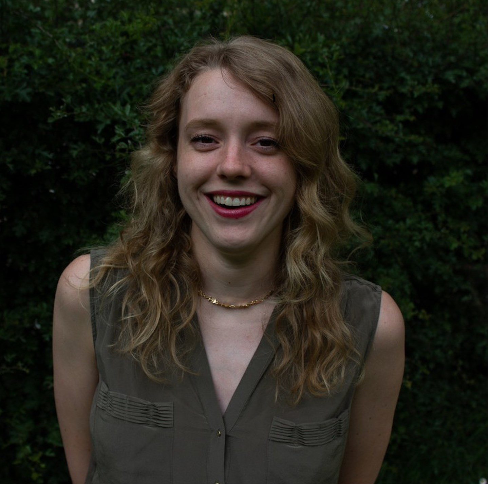

Counselling for adults
Support for when you feel overwhelmed, burnt out, low, worried about what comes next, affected by loss, or ready to work through a difficult past experience.
Online counselling · The Hague, Netherlands
Balance and Connect offers counselling and psychological support for young people aged 12+, international students, and adults. Sessions are available online in English and Dutch.
Support that sees the whole person
Counselling is tailored to your needs, cultural context, age, and the life you want to move towards.
Support for when you feel overwhelmed, burnt out, low, worried about what comes next, affected by loss, or ready to work through a difficult past experience.
Support for young people aged 12+ with anxiety, low mood, school avoidance, self-harm, trauma, exam burnout, sleep, grief, belonging, neurodivergence, or LGBTQ+ identity questions.
Where appropriate, I work systemically with parents, schools, and other health professionals while protecting the young person’s confidential counselling space, except where safety concerns arise.
Support for expats and international families navigating relocation, culture shock, identity, a new school or country, changing relationships, and questions of home and belonging.
My counselling approach
Difficult periods are not always signs that something is wrong with us. They can be signals that something in our lives needs attention. Together, we look at what feels out of balance, reconnect with what matters to you, and identify a helpful way forward.
Counselling may include elements of:

Meet Tessa
I’m Tessa van der Meiden, the psychologist behind Balance and Connect.
I was born abroad to an Irish mother and Dutch father. My childhood took me from Romania to Peru, Gabon, Egypt, and the Netherlands, with later chapters in South Africa and California.
After qualifying as a psychologist in 2020, I moved to China for two years, during the global pandemic. During my time in Beijing, I worked as a school counsellor offering specialised mental health support to teenagers at a prestigious international school. I then moved to Bangkok, Thailand, to offer counselling and safeguarding support within the role of school counsellor at a well-known inclusive international school. After three years in Bangkok, and some world-travelling, I relocated back to the Netherlands in April 2026 and set up my own practice.
These experiences taught me that international life can be both enriching and complex. We may carry different versions of ourselves across countries, cultures, and languages. In our work, every part of you and your story is welcome.
I find balance through family time, running, the gym, yoga, cooking, baking, painting, and maintaining connections around the world. I recently also completed 200HR Hatha and Vinyasa Yoga Teacher Training in Colombia.
Education & professional development
I regularly seek supervision and intervision from qualified, experienced colleagues to support an ethical and reflective practice.
€90 / 45 minutes
For counselling sessions with young people aged 12+ and adults.
Having recently returned to the Netherlands, I currently work outside the insured Dutch mental healthcare system (GGZ). Sessions are not covered by Dutch health insurance, and you therefore do not need a referral from your GP.
A sliding-scale fee may be available for international students or clients living outside the Netherlands, based on personal circumstances and local cost of living.
This service supports young people and adults with concerns such as anxiety, stress, burnout, belonging, grief, difficult experiences, and life transitions.
Online counselling is not the right level of care for someone in acute distress, experiencing active suicidal thoughts with intent or a plan, or needing intensive medical or psychiatric support. Some concerns may also benefit from a more specialised service.
If I am not the right person to help directly, I will do my best to help you identify and connect with a service that better fits your needs.
Start a conversation
Share a little about what you are looking for, and I will reply to arrange a free 15-minute consultation for you or your teenager.
Based in The Hague, the Netherlands
Online · English & Dutch
42067316
Your message is treated with care. Please avoid including highly sensitive or urgent information. The enquiry form is provided by Tally.
Prefer email? Write to info@balanceandconnect.nl
My practice and this website do not provide emergency or crisis support. If you or someone else is in immediate danger, call 112. For urgent mental health support, contact your GP or out-of-hours GP service (huisartsenpost). If you are thinking about suicide, contact 113 Suicide Prevention or call 113 free of charge from within the Netherlands.
For advice about child safety, contact Veilig Thuis free of charge on 0800-2000. The service is available 24/7, and you can discuss a situation anonymously.